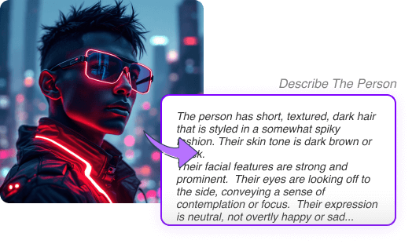

AI搭載画像プロンプトツール
画像作成のあらゆる面をカバーする、完全なAIツールスイート



画像プロンプトからのインスピレーション
AI生成画像で視覚的インスピレーションの世界を探索


![A fantastical cityscape with buildings that twist and turn. Doodle art style. Emphasis on playful, spontaneous designs and whimsical characters. Use of intricate patterns and repetitive elements to create visual interest. Combination of childlike simplicity with detailed illustrations. Can be black and white or colorful, allowing for creative expression. Incorporation of various themes, such as nature, fantasy, and everyday life. Freeform and non-representational, encouraging imagination and personal style. Often serves as a form of relaxation and mindfulness.](ad_ic_img_2024-09-19_1726732115272_4506.webp)


よくある質問
サービスに関する一般的な質問への回答を見つける
画像プロンプトは、AIに画像を作成させるための指示や言葉のセットです。シーンや物体を描写するように、どのような画像が欲しいかをAIに伝えます。画像プロンプトを使用することで、あなたのアイデアやニーズに合った画像をAIが作成するのを手助けできます。画像プロンプトを使えば、想像力を簡単にデジタルアートに変換でき、創造的な表現を誰もが手軽に行えるようになります。
画像プロンプトは、AIモデルに特定の画像を作成するよう導くことで、AI画像生成において重要な役割を果たします。これらは、望む画像の内容、スタイル、詳細を定義する指示として機能します。プロンプトはユーザーの意図に対するAIの理解に影響を与え、生成される画像の品質と正確さに影響し、ユーザーのビジョンを視覚的な形に変換するのを助けます。
画像プロンプトには通常、主題の説明、設定や背景、望ましい芸術的スタイルが含まれます。色彩スキーム、照明条件、画像の全体的な雰囲気や雰囲気をしばしば指定します。追加の詳細には、主題の特定の動作、ポーズ、または独特の特徴が含まれる場合があります。画像プロンプトがより詳細で具体的であるほど、生成される画像はユーザーのビジョンにより近くなります。
はい！当サイトのコア機能は無料でご利用いただけます。すべてのテキストからプロンプト生成ツールは完全に無料で、無料ユーザーは画像からテキストへの変換ツールを1日5回まで利用できます。また、無料ユーザーには画像生成用の2クレジットが無料で提供されます。追加の利用をご希望の場合は、プレミアムプランへのアップグレードまたはクレジットの個別購入が可能です。
私たちはユーザーのプライバシーを非常に重視しています。プラットフォームにアップロードされたすべての画像はリアルタイムで処理され、サーバーに保存されることはありません。私たちはあなたの画像を一時的にプロンプト生成のために使用し、その後すぐに削除します。あなたのプライバシーとデータセキュリティが最優先事項です。
画像プロンプトを使用するには、作成したい画像の概要を明確に説明するテキストを作成することから始めます。ImagePrompt.orgやMidjourneyなどのAI画像生成ツールに画像プロンプトを入力し、画像を生成します。プロンプトの言い回しや詳細を変えて実験し、結果を洗練させていきます。
はい、画像プロンプトはAI画像生成器によって異なる場合があります。プロンプト作成の基本原則は似ていますが、ツールによって特定の要件や強みが異なる場合があります。一部のツールは特定の文法構造を好んだり、特定のキーワードにより敏感だったり、特定の芸術的スタイルに優れていたりします。使用している特定のAIツールの能力と制限を理解することが重要です。
一般的な画像プロンプトの構造には以下のようなものがあります：'[主題]の写実的な画像、[設定]で[スタイル]の美的感覚を持つ'、'[主題]の超現実的で夢のような画像、[設定]で'、'[主題]の高解像度で詳細な画像、[設定]で[詳細]を含む'、'[主題]のローポリ3D画像、[設定]で[詳細]を含む'。
ImagePrompt.orgは、ユーザーが効果的でインスピレーションを与える画像プロンプトを作成できるようにすることを目指しています。画像プロンプト作成のためのツールとガイダンスを提供することで、ユーザーがユニークでパーソナライズされたAI作成画像を生成できるようにします。私たちは、想像力と視覚的創造の間のギャップを埋め、ユーザーがAI生成アートワークを通じてアイデアを実現できるようにすることを目指しています。